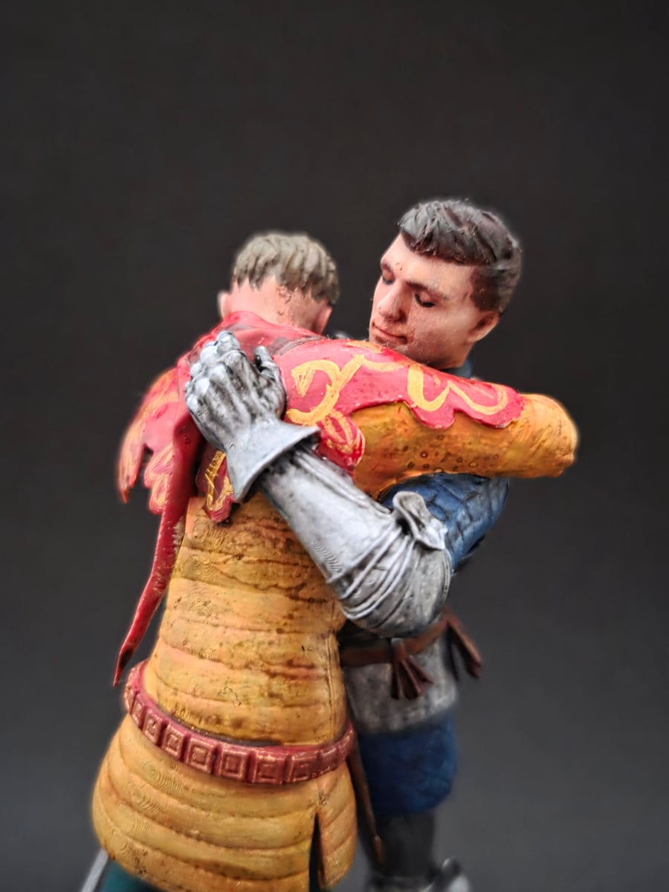
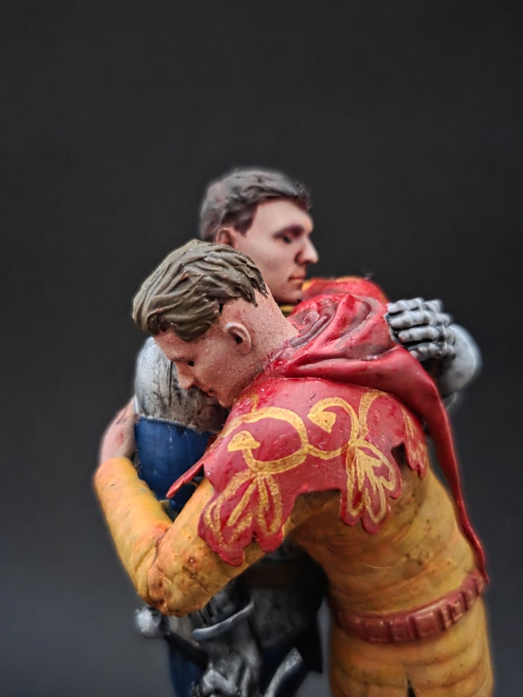
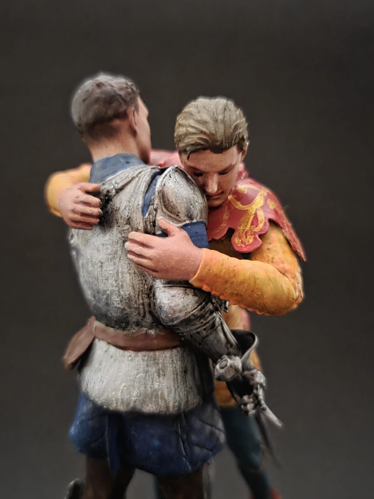
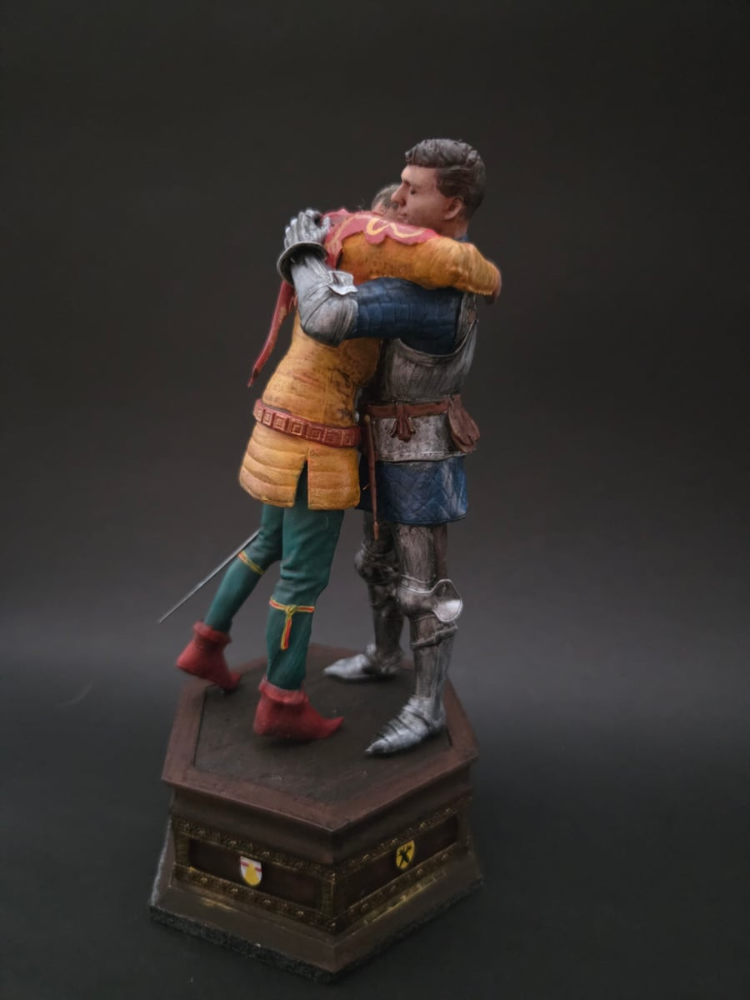

Gallery
El reencuentro de Hans y Henry
Este momento de reencuentro, una de mis escenas favoritas de Kingdom Come Deliverance 2. Tras pasar por innumerables calvarios, Henry por fin logra rescatar a Hans, y este abrazo es un momento muy especial.
Es la primera vez que Hans se lanza a los brazos de Henry, y sus expresiones lo dicen todo. Pasando desde un alivio genuino hasta la máxima expresión de alegría, terminada con un sentido abrazo.




